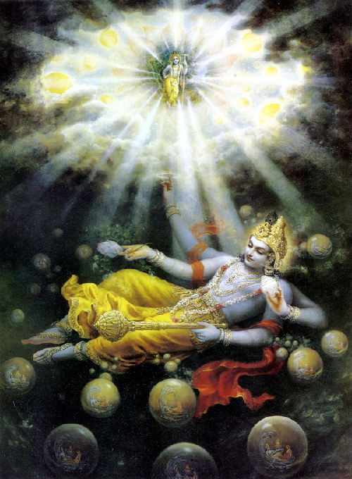
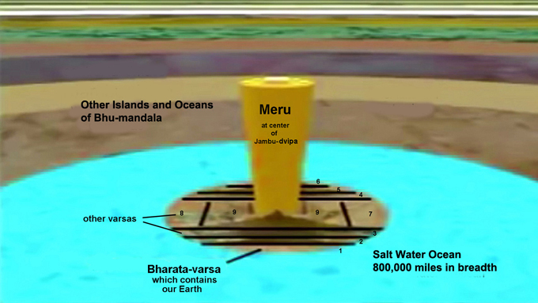

SAILING TO JAMBŪDVĪPA
Spiritual Science Applied to the Question of the Earth’s Shape and Location, Part Two
Jan 02, 2017 — IRELAND (SUN) —
BY: MAYESVARA DASA
Why did a dying king ask about the measurement of the Earth?
Part One of this paper can be found here. Before continuing with the main epistemological theme of this paper (in part three), I would like to first address the question of why a discussion on the shape, nature, and location of the Earth is of spiritual interest and relevance to devotees of Krishna. When the issue of the Earth's shape is raised, many devotees of Krishna may simply shrug the shoulders, and question its relevance: What difference does it make whether the Earth is a small round planet floating in space, or a huge circular plane that crosses the universe? What has the shape of the Earth got to do with one's devotional service to Krishna? Why is it even a topic in Srimad "Bhagavatam?
The nature of the Earth is one of the many many topics discussed in the great literature, Srimad Bhagavatam, which is the essence of all Vedic literature(sarva-vedetihasanam saram, SB 1.3.41). The sage Sukadeva Goswami spoke Srimad Bhagavatam to king Pariksit, a great devotee of Krishna, who had only seven days to live, and who wished to know the perfection of life before his death. Creation and cosmology were among the topics spoken to King Pariksit in reply to his inquiry about 'the way of perfection' and especially for one at the time of death. Speaking to the great sage Sukadeva Goswami, King Pariksit said:
You are the spiritual master of great saints and devotees. I am therefore begging you to show the way of perfection for all persons, and especially for one who is about to die.
Please let me know what a man should hear, chant, remember and worship, and also what he should not do. Please explain all this to me. (SB 1.19.37-38)
Whilst devotional service to Krishna certainly does not depend on knowing the shape and location of the Earth, bear in mind that this knowledge of the Earth and it's relation to the rest of the universe were among the topics considered worthy of 'hearing, chanting, and remembering' by a devotee king who had seven days to live. Since the king wished to know the samsiddhim (the way of perfection) before he died, we can consider Sukadeva Goswami's description of the universe as one of the essential items to know about the world, its creator, and our relationship to both. So important is this topic, that Srila Prabhupada inaugurated the Mayapur Temple of Vedic Planetarium in order to teach the world about the Vedic cosmology, and thereby counteract the materialistic conception of life and the universe. If properly understood and presented, this subject will have a profound and revolutionary affect on one's spiritual relation to the Earth and to Krishna Himself (SB 5.26.38-40).
The position and importance of the Earth within the universe is not an insignificant detail. Far from being a small irrelevant planet in dark lifeless space, Srimad Bhagavatam describes the Earth (Bhu-mandala) as the biggest feature in the universe with a diameter of four billion miles. One of the many Sanskrit names for Earth is Mahi meaning 'the great one' in consideration of the vast size. Indeed, most of the description of the universe in Srimad Bhagavatam centers on the varieties of life and environments upon the great Earth plane. The Bhu-mandala's inhabited area is a vast area covering hundreds of millions of miles, and there are billions of other human beings living in locations along this immense expanse of land. According to the description of Sukadeva Goswami, our own area Earth (situated in a place called Bharata-varsha), is not described as one of the other grahas, or planets; rather, it is described as only a small area of this much greater Earth area that forms the huge circular disc-shaped plane crossing the center of the universe.
Bhu-mandala is so-named because the Earth (Bhu) is a circular plane (mandala). Is that not news? Why have we not heard of this Earth plane? Why have we no experience of a greater Earth area? Why are we led to believe that Earth is a small globe-shaped planet floating in lifeless space? Why did Srila Prabhupada not speak about this conception of the Earth, and why did he constantly refer to the Earth as a globe and a planet. These are questions that we gradually hope to answer in these various papers on the topic of the Earth in Srimad Bhagavatam. In later papers, we hope to provide a reasonable explanation as to why Srila Prabhupada referred to our own Earth area as 'a globe' and 'a planet,' when Srimad Bhagavatam describes something very different.
The relevance of the Earth's shape, to devotees of Krishna can be ascertained from the inquiries into the subject made by Pariksit Maharaja to Sukadeva Goswami. In the course of the fascinating discussion about the satyam param or absolute truth (SB 1.1.1), King Pariksit specifically asked Sukadeva Goswami about the measurements and characteristics of the Earth, named Bhu-mandala in the Sanskrit language (SB 5.16.1-2). Why was a dying king interested in the measurements and characteristics of the Earth? What has questions about the size and characteristics of the Earth to do with either dying or spiritual realization? We shall come back to the specific details of this question (in parts 3 and 4). This question by King Pariksit and its answer by Sukadeva Goswami, hold the key to a proper scientific understanding of the Earth as a circular plane, not a globe.
The question also has spiritual relevance because it concerns how Krishna is to be perceived within His creation. The king specifically wanted to know how he could perceive Krishna in His universal form (SB 5.16.3). The universal form refers to Krishna's expansion as the universe itself. Krishna did not just create a universe; Krishna expanded His own energy in the form of the universe, and thus the universe is non-different from Krishna Himself. This universal form of Krishna is called virat-rupa. Pariksit Maharaja wanted to know the details of the universal body of the Lord as explained by Srila Prabhupada in the following purport:
"When Maharaja Pariksit was thinking of the universal form of the Lord, his mind was certainly situated on the transcendental platform. Therefore although he might not have had any reason to be concerned with detailed information of the universe, he was thinking of it in relationship with the Supreme Lord, and therefore such geographical knowledge was not material but transcendental. Elsewhere in Srimad-Bhagavatam (1.5.20) Narada Muni has said, idam hi vishvam bhagavan ivetarah: the entire universe is also the Supreme Personality of Godhead, although it appears different from Him. Therefore although Pariksit Maharaja had no need for geographical knowledge of this universe, that knowledge was also spiritual and transcendental because he was thinking of the entire universe as an expansion of the energy of the Lord." (Purport 5.16.3)
Please note here how Srila Prabhupada states that Pariksit Maharaja's inquiry into the geographical knowledge of the universe was spiritual and transcendental because he was thinking of the entire universe as an expansion of the energy of Krishna. From this we should understand that our present discussion about Sukadeva Goswami's description of the Earth's shape, location, and characteristics, is not a mundane topic. Because of the obvious disparity between the Vedic and modern conceptions of the Earth, the on-going presentation on this topic involves the seemingly mundane politics of debating, challenging, and exposing what myself and others have ascertained to be the speculations and deceptions behind the official version of the Earth as a small globular planting rotating in lifeless space. The investigation into the authenticity of the space program is only for the purpose of proving the transcendental version of Srimad Bhagavatam, not for being embroiled in mundane political controversy. An investigation into the true shape of the Earth should not be snubbed or ostracized by ISKCON's management for fear of its political and social implications. Fear of the political and social implications which may bring the society into controversial territory is not a reason for failing to investigate the truth of the matter. The Temple of Vedic Planetarium is especially meant for revealing the truth of Krishna's creation and our place within it. Establishing the truth of something necessarily involves displacing untruth. In order to be truthful, one has to be prepared to battle with what is untruthful.
WHY IS THE MAYAPUR PLANETARIUM CALLED THE TEMPLE OF VEDIC PLANETARIUM?
Before looking at the specific question regarding the measurements and characteristics of the Earth, we shall first look at the spiritual significance of this virta-rupa conception of the universe, and it's depiction within the Mayapur Temple of Vedic Planetarium. A planetarium by definition is building which contains exhibitions of the movements of stars and planets. Planetariums are generally not considered as sacred spaces warranting the name temple. In modern times, the universe is generally regarded by secular science as simply material energy without connection to God, or indeed of having any spiritual significance. The Mayapur Temple of Vedic Planetarium is so named because it will be contain not only the worshipful forms of Sri-Sri Radha-Krishna, Sri-Sri Pancha-Tattva, and Sri Nrisinghadeva, but it will also contain the worshipful form of Krishna in His expansion as the universe itself. This universal form is called the virat-rupa, and will form the major exhibit in the main dome of the Temple of Vedic Planetarium. A correct understanding of the universal form will have revolutionary effects on our understanding of the Earth, and our place and purpose within it. The wrong understanding and presentation of the Earth shape and location in the universal form, will simply continue people's illusion about who they are, and where they are in the universe. It's very important, therefore, that we understand the thing correctly.
In reply to Pariksit Maharaja's inquiry about how to perceive the universal form, Sukadeva Goswami describes in detail the virat-rupa or cosmic form of the Lord in chapters 16 through to 26 of the fifth canto of Srimad Bhagavatam. Sukadeva Goswami concludes by describing the devotional benefits of hearing this description of the Lord's universal form (SB 5.26.38-40). This is significant to practitioners of bhakti-yoga because Srimad Bhagavatam describes the universe itself as a form of the Lord upon which we can meditate and become Krishna conscious. Indeed, to see the universe as anything other than an expansion of Krishna is what constitutes maya, or illusion:
"Brahma, it is I, the Personality of Godhead, who was existing before the creation, when there was nothing but Myself. Nor was there the material nature, the cause of this creation. That which you see now is also I, the Personality of Godhead, and after annihilation what remains will also be I, the Personality of Godhead.
O Brahma, whatever appears to be of any value, if it is without relation to Me, has no reality. Know it as My illusory energy, that reflection which appears to be in darkness." (SB 2.9.33-34)
This conception of the Lord as the universe itself should not be equated with a crude pantheism that specifically rejects a personal conception of God. Srimad Bhagavatam teaches that it is Krishna, the Supreme Personality of Godhead, who expands His energy in the form of the universe, which is inconceivably simultaneously different and non-different from Him. This philosophical concept is called acintya-bhedabheda-tattva. The Srimad Bhagavatam teaches that nature is non-different from Krishna because all the ingredients of material nature come from His body alone. As a spider produces a web from its own body and then withdraws the web into its body, so all of the materials that constitute the universe are brought forth from the body of Krishna and are later withdrawn back into His body.
"My dear Lord, You alone create the universes. O Personality of Godhead, desiring to create these universes, You create them, maintain them and again wind them up by Your own energies, which are under the control of Your second energy, called yogamaya, just as a spider creates a cobweb by its own energy and again winds it up. (SB 3.21.19)
PURPORT: In this verse two important words nullify the impersonalist theory that everything is God. Here Kardama says, "O Personality of Godhead, You are alone, but You have various energies." The example of the spider is very significant also. The spider is an individual living entity, and by its energy it creates a cobweb and plays on it, and whenever it likes it winds up the cobweb, thus ending the play. When the cobweb is manufactured by the saliva of the spider, the spider does not become impersonal. Similarly, the creation and manifestation of the material or spiritual energy does not render the creator impersonal. Here the very prayer suggests that God is sentient and can hear the prayers and fulfill the desires of the devotee. Therefore, He is sac-cid-ananda-vigraha [Brahma-samhita. 5.1], the form of bliss, knowledge and eternity."

Although the material nature is non-different from Krishna, Krishna remains in all circumstances a distinct person who is the Supreme Being over all. Krishna personally controls the creation, maintenance and destruction of the multi-universes that emanate from His transcendental body. Because Krishna is the original source, maintainer, and attraction of all, Krishna remains eternally the worshipful and adorable object of the other living beings. However, the virat-rupa conception of the Lord, means that the devotees of Krishna can not only relish His eternal form of Krishna the cowherd boy, but they can also experience the ecstasy of Krishna consciousness by perceiving Krishna's wonderful expansion as the universe itself. In his Srimad Bhagavatam purports and lectures, Srila Prabhupada often states that meditation on the universal form is for neophytes, impersonalists, atheists, and various other kinds of materialistic people who are unable to conceive of Krishna's original two-handed form. In other contexts, however, perception of the universal form as non-different from Krishna is praised as the realization of the top-most maha-bhagavatas or pure devotees of Lord Krishna. Who else but Krishna can make, and become a universe? What else are we looking at except a form of Krishna?
"Within this world, whatever is perceived by the mind, speech, eyes or other senses is Me alone and nothing besides Me. All of you please understand this by a straightforward analysis of the facts." (SB 11.13.24)
It is simply the deluding power of Krishna's own illusory potency that prevents us from perceiving Krishna in His universal form. The pure devotees who are free from all illusion thus offer love and respect to all the forms, features, places, people, and other living beings within the creation, considering and treating them all as part and parcel of Krishna Himself. The vision of seeing everything in relation to Krishna is described in the beautiful verses of Sri Isopanishad:
"He who sees systematically everything in relation to the Supreme Lord, who sees all living entities as His parts and parcels, and who sees the Supreme Lord within everything never hates anything or any being.
One who always sees all living entities as spiritual sparks, in quality one with the Lord, becomes a true knower of things. What, then, can be illusion or anxiety for him?" (Sri Isopanishad, Mantra 6-7)
Illusion, fear, and hatred occur when we experience something separate or different from Krishna, and thus we develop a dualistic sense of like and dislike towards other people and things based on the false ego's sense of being a separate enjoyer of material energy. Rather than seeing the universe as an expansion of Krishna and something to be served, in materialistic consciousness we see the universe as a chance occurrence and something to be exploited for one's personal sense gratification. This is an illusion because ultimately everything in the universe is an expansion of Krishna and belongs to Krishna alone. The point is explained by Prahlada Maharaja:
"My dear Lord, O Supreme Personality of Godhead, the entire cosmic creation is caused by You, and the cosmic manifestation is an effect of Your energy. Although the entire cosmos is but You alone, You keep Yourself aloof from it. The conception of "mine and yours," is certainly a type of illusion [maya] because everything is an emanation from You and is therefore not different from You." (SB 7.9.31)
By hearing of the universal form from a devotee of Krishna like Sukadeva Goswami, one gains faith, devotion, and realization of Krishna, and ultimately gives up the separatist mentality of trying to exploit the material world as a separate enjoyer. One can come to love, respect, and serve all things in the universe as part of the universal form of the Lord. The ecstatic vision of a maha-bhagavata, a pure devotee of Lord Krishna is described in the verse below:
"A devotee should not see anything as being separate from the Supreme Personality of Godhead, Krishna. Ether, fire, air, water, earth, the sun and other luminaries, all living beings, the directions, trees and other plants, the rivers and oceans — whatever a devotee experiences he should consider to be an expansion of Krishna. Thus seeing everything that exists within creation as the body of the Supreme Lord, Hari, the devotee should offer his sincere respects to the entire expansion of the Lord's body." (SB 11.2.41)
Just as Krishna has His specific appearance, so His expansion in the form of the universe also has a specific appearance. Like all of His incarnations, Krishna's appearance in the form of the universe is very wonderful and beautiful. The description of the Bhu-mandala, for example, with the planets and constellations above it, is extraordinary and delightful:
"This great machine, consisting of the stars and planets, resembles the form of a Shishumara [dolphin] in the water. It is sometimes considered an incarnation of Krishna, Vasudeva. Great yogis meditate upon Vasudeva in this form because it is actually visible." (SB 5.23.4)
The materialists also delight in observing and studying the universe, but due to an atheistic attitude, they are unable to understand or perceive the universe in relation to Krishna. By the mercy of Srila Prabhupada, this wonderful universal form of Lord Krishna will be in display at the Mayapur Temple of Vedic Planetarium. Contemplation, meditation, or study of this form will certainly help the forgetful materialistic living entities to remember or revive their relationship with the Lord:
"Sri Sukadeva Gosvami said: Formerly, prior to the manifestation of the cosmos, Lord Brahma, by meditating on the virat-rupa, regained his lost consciousness by appeasing the Lord. Thus he was able to rebuild the creation as it was before. (SB 2.2.1)
PURPORT: The example cited herein of Sri Brahmaji is one of forgetfulness. Brahmaji is the incarnation of one of the mundane attributes of the Lord. Being the incarnation of the passion mode of material nature, he is empowered by the Lord to generate the beautiful material manifestation. Yet due to his being one of the numerous living entities, he is apt to forget the art of his creative energy. This forgetfulness of the living being—beginning from Brahma down to the lowest insignificant ant—is a tendency which can be counteracted by meditation on the virat-rupa of the Lord. This chance is available in the human form of life, and if a human being follows the instruction of Srimad-Bhagavatam and begins to meditate upon the virat-rupa, then revival of his pure consciousness and counteraction of the tendency to forget his eternal relationship with the Lord can follow simultaneously." (Purport 2.2.1)
Descriptions of Krishna are transcendental and enable us to revive our eternal relationship with Him. Hearing of these forms and pastimes purifies one of material illusion and makes one eligible to go back to Godhead. Interestingly, since Srimad Bhagavatam also describes that the universe itself is an expansion of Krishna, one can become Krishna conscious by meditation on the universe itself. Krishna is often called by the name vishva-murti (form of the universe) even by His own intimate devotees who otherwise understand Him in His form as the original Supreme Personality of God. Kunti for example addresses Krishna by the name vishva-murti:
"O Lord of the universe (vishva-isha), O soul of the universe (vishva-atman), O personality of the form of the universe (vishva-murte), please, therefore, sever my tie of affection for my kinsmen, the Panavas and the Vrishnis." (SB 1.8.41)
A similar address to Krishna is made by Uddhava:
"Sri Uddhava said: O Lord of the universe! O form of the universe! (vishva-murte)" (SB 11.19.8)
Although the devotees of Krishna prefer to mediate upon Krishna in His original two-handed form, it should be appreciated that the universe itself is nothing but a gigantic form of that same Lord Krishna. When we look at the universe, we are looking at a form of Krishna (visvha-murti). The form of the cosmos which will be on display at the Mayapur Temple of Vedic Planetarium should therefore to be considered a worshipful form of the Lord as perceived by Prahlada Maharaja:
"This cosmic manifestation, the material world, is also Your body (tasya—of that Supreme Personality of Godhead; eva—certainly; te—of You; vapuh—the cosmic body; idam—this universe) (7.9.33)
Purport
…Thus the original cause of everything is Vishnu, and consequently the cosmic manifestation is not different from Vishnu. This is confirmed in Bhagavad-gita (10.8), wherein Krishna says, aham sarvasya prabhavo mattah sarvam pravartate: "I am the source of all spiritual and material worlds. Everything emanates from Me." Garbhodakashayi Vishnu is an expansion of Karanodakasayi Vishnu, who is an expansion of Sankarshana. In this way, Krishna is ultimately the cause of all causes (sarva-karana-karanam [Bs. 5.1]). The conclusion is that both the material world and spiritual world are considered to be the body of the Supreme Lord. We can understand that the material body is caused by the spiritual body and is therefore an expansion of the spiritual body. Thus when one takes up spiritual activities, one's entire material body is spiritualized. Similarly, in this material world, when the Krishna consciousness movement expands, the entire material world becomes spiritualized. As long as we do not realize this, we live in the material world, but when we are fully Krishna conscious we live not in the material world but in the spiritual world."
Again in SB 2.1.24, the universe itself is similarly described as the cosmic body of Krishna:
"This gigantic manifestation of the phenomenal material world as a whole is the personal body of the Absolute Truth, wherein the universal resultant past, present and future of material time is experienced. (Sb 2.1.24) visheshah—personal; tasya—His; dehah—body; ayam—this; sthavisthah—grossly material; ca—and; sthaviyasam—of all matter;
Purport
Anything, either material or spiritual, is but an expansion of the energy of the Supreme Personality of Godhead, and as stated in the Bhagavad-gita (13.13), the omnipotent Lord has His transcendental eyes, heads and other bodily parts distributed everywhere. He can see, hear, touch or manifest Himself anywhere and everywhere, for He is present everywhere as the Supersoul of all infinitesimal souls, although He has His particular abode in the absolute world. The relative world is also His phenomenal representation because it is nothing but an expansion of His transcendental energy. Although He is in His abode, His energy is distributed everywhere, just as the sun is localized as well as expanded everywhere, since the rays of the sun, being nondifferent from the sun, are accepted as expansions of the sun disc. In the Vishnu Purana (1.22.52) it is said that as fire expands its rays and heat from one place, similarly the Supreme Spirit, the Personality of Godhead, expands Himself by His manifold energy everywhere and anywhere." (Purport 2.1.24)
The Mayapur planetarium is not a mundane exhibition of the material energy as in an ordinary planetarium; it is a presentation of the universal form of the Lord, hence it is called The Temple of Vedic Planetarium. It is a temple for pilgrims to see not only the archa-vigraha forms of Sri-Sri Radha-Krishna, Sri-Sri Pancha-Tattva, and Sri Nrsinghadeva, but also to see the Lord's worshipful form as the universe itself.
"The virat-rupa or vishva-rupa, the gigantic universal form of the Lord, which is very much appreciated by the impersonalist, is not an eternal form of the Lord. It is manifested by the supreme will of the Lord after the ingredients of material creation. Lord Krishna exhibited this virat or vishva-rupa to Arjuna just to convince the impersonalists that He is the original Personality of Godhead. Krishna exhibited the virat-rupa; it is not that Krishna was exhibited by the virat-rupa. The virat-rupa is not, therefore, an eternal form of the Lord exhibited in the spiritual sky; it is a material manifestation of the Lord. The arca-vigraha, or the worshipable Deity in the temple, is a similar manifestation of the Lord for the neophytes. But in spite of their material touch, such forms of the Lord as the virat and archa are all nondifferent from His eternal form as Lord Krishna." (Purport 3.6.4)
"The extension of power by the Lord and the Lord Himself personally are one in one sense, but at the same time the mahat-tattva is different from the Lord. Therefore the potency of the Lord and the Lord are simultaneously different and nondifferent. The conception of the virat-rupa, especially for the impersonalist, is thus nondifferent from the eternal form of the Lord. (SB 1.3.3)
From the above verses and purports we can understand that the depiction of the universal form in the main dome of the Vedic Planetarium is more than just a map of the universe. It is a display of the form of Lord Krishna in His expansion as the universe itself. So how this universal form looks is important to us. As mentioned, the position and importance of the Earth within the universal form is not an insignificant detail. Far from being a small irrelevant planet in dark lifeless space, Srimad Bhagavatam describes the Earth as the biggest feature in the universe. According to the description of Sukadeva Goswami, our own Earth area (in a place called Bharata-varsha) is not a planet in space like the other grahas (planets), but is only a small area of the greater Earth area. Is that not news? Imagine if it was suddenly announced in the world's media that new continents were discovered beyond the Arctic and Antarctica, and that contact had been made with humans of a vastly superior culture. One would be obviously fascinated to hear about these new lands and advanced human beings. The first thing we would want to know is the names of these new places and people, and of course, what they look like. Practically the first question we ask anyone is, 'Where do you come from'? Srimad Bhagavatam provides information of new lands and new people beyond the borders of our known Earth area. In fact, the huge scale of these new lands surrounding us makes us appear like ants in comparison. This is a revolutionary conception of Earth that states plainly: we are not on a globe spinning around in space.
Srimad Bhagavatam describes that our closest neighbours are to the north of our known Earth area, and reside in a place called Jambudwipa, an area measured at 800,000 miles in length and breadth.

A brief description of the environment, people, and spiritual culture of the residents of Jambudvipa, including our own area of Bharata-varsha, is given in the fifth canto of Srimad Bhagavatam, chapters sixteen to nineteen. Jambudwipa is surrounded by another six islands. These islands encircle Jambudwipa in a unique pattern of expanding concentric circles and oceans. Jambudwipa and the surrounding oceans are known as Sapta-dwipa and expand to a distance of 202,800,000 miles. A description of the conditions and people who live here is given in chapter twenty. A description of further features of Bhu-mandala as well as a description of the planets and stars is given in chapters twenty-one and twenty-two. A description of the seven subterranean realms that go below the surface of Bhu-mandala for hundreds of thousands of miles is given in chapters twenty-four and twenty-five. The different lokas in the universe (fourteen in all) are situated above and below the Earth (or plane of Bhu-mandala) and facilitate the different desires and karma of the living entities within the material world. All of these places have diverse environments, and are inhabited by various forms of life. Srimad Bhagavatam particularly describes the varieties of spiritual culture (or lack of it) throughout these regions. A description of the hells is also given in chapter twenty-six. These various descriptions of life and situations throughout the universe educate the living entity about the choice of environment, as well as reminding one of the karmic results that follow as a result of applying or neglecting directives from the Vedic literature. Thus, the Vedic Planetarium has the practical function of educating the visitors about death, transmigration of the soul, and the future rebirth of the soul into various environments throughout the universe:
"My dear King, as I heard of it from my spiritual master, I have fully described to you the creation of this material world according to the fruitive activities and desires of the conditioned souls. Those conditioned souls, who are full of material desires, achieve various situations in different planetary systems, and in this way they live within this material creation.
My dear King, I have thus described how people generally act according to their different desires and, as a result, get different types of bodies in higher or lower planets. You inquired of these things from me, and I have explained to you whatever I have heard from authorities. What shall I speak of now?" (5.26.14-15)
All of these environments are part of the universal form.
My dear King, I have now described for you this planet earth, other planetary systems, and their lands [varshas], rivers and mountains. I have also described the sky, the oceans, the lower planetary systems, the directions, the hellish planetary systems and the stars. These constitute the virat-rupa, the gigantic material form of the Lord, on which all living entities repose. Thus I have explained the wonderful expanse of the external body of the Lord." (SB 5.26.40)
Here Sukadeva Goswami mentions the dwipas, varshas, and other features of the Bhu-mandala that make up part of the adbhutam Isvarasya sthulam vapuh or wonderful (adbhutam) form of the Supreme Personality of Godhead (Isvarasya) in His external feature as the universal body (sthulam vapuh). The Mayapur Temple of Vedic Planetarium has thus been appropriately called the adbhuta Mandir or astounding Temple because it will contain the universal form of adbhutam isvarasya. This verse, indeed, points to where the name may have originated.
In the above verse, Sukadeva Goswami concludes his answer to Pariksit Maharaja's original inquiry about the Bhu-mandala (SB 1.16.1-2). The description of what Srila Prabhupada translates here as 'this earthly planet' is certainly not that of our assumed Earth planet. The word Bhu (Earth) is referring to the entire Bhu-mandala of 4 billion radius. This is the Earth described by Sukadeva Goswami in chapters 16 through to 26 of the fifth canto of Srimad Bhagavatam. Sukadeva Goswami mentions here the 'dwipas' upon the Bhu-mandala which Srila Prabhupada translates as 'other planetary systems.' The dwipas, however, are not planets in space as we think of them, but rather a series of seven concentric islands and oceans that stretch out across the landscape of Bhu-mandala. This is a very important consideration in our understanding of the Earth, and thus a detailed explanation of why Srila Prabhupada referred to these areas as 'planetary systems' is required. We shall, of course, come back to the issue in later parts.
Sukadeva Goswami also mentions here the other lands or 'varshas' on the Bhu-mandala of which Bharata-varsha is only one. Bharata-varsha is clearly described as being part of Jambudwipa, not part of a small round planet. The thing that Bharata-varsha is part of is an 800,000 mile island, not a 24,900 mile globe. That is the description. Sukadeva Goswami's describes that Bharata-varsha is 72,000 miles in size (three times the circumference of the so-called globe) and located on the southern side of Jambudwipa, an 800,000 mile island. This is clearly not a description of India (2,000 miles in length) on the assumed space ball of 24,900 mile circumference floating in space.

THE DEVIL'S ADVOCATE
In the forthcoming series of papers, we would like to humbly point out some mistakes and misconceptions in the current understanding of the universal form and particularly the shape and nature of the Earth which is to be depicted in the Mayapur Temple of Vedic Planetarium. It is, indeed, quite surprising that the models for the Bhu-mandala exhibits are being pushed through without any serious critique of their accuracy and fidelity to shastra. The TOVP requires a devils advocate.
"The Advocatus Diaboli (Latin for Devil's Advocate) was formerly an official position within the Catholic Church: one who "argued against the canonization [sainthood] of a candidate in order to uncover any character flaws or misrepresentation of the evidence favoring canonization."
In common parlance, the term a devil's advocate describes someone who, given a certain point of view, takes a position he or she does not necessarily agree with (or simply an alternative position from the accepted norm), for the sake of debate, or to explore the thought further.
It was this person's job to take a skeptical view of the candidate's character, to look for holes in the evidence, to argue that any miracles attributed to the candidate were fraudulent, and so on. The Devil's advocate opposed God's advocate (Latin: advocatus Dei; also known as the Promoter of the Cause), whose task was to make the argument in favor of canonization. During the investigation of a cause, this task is now performed by the Promoter of Justice (promotor iustitiae) , who is in charge of examining the accuracy of the inquiry on the saintliness of the candidate."
No one likes to be pitted against a devil's advocate, but if even a reactionary organisation like the Roman Catholic Church considers it wise to employ a devil's advocate, the TOVP management may likewise consider it wise to listen to some critical objections to their current understanding of the Earth.´
End of part two - continued on part three
Download article
earth-shape-and-location2.pdf
earth-shape-and-location2.doc